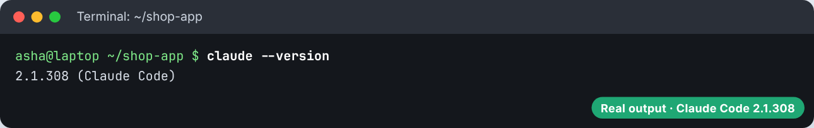
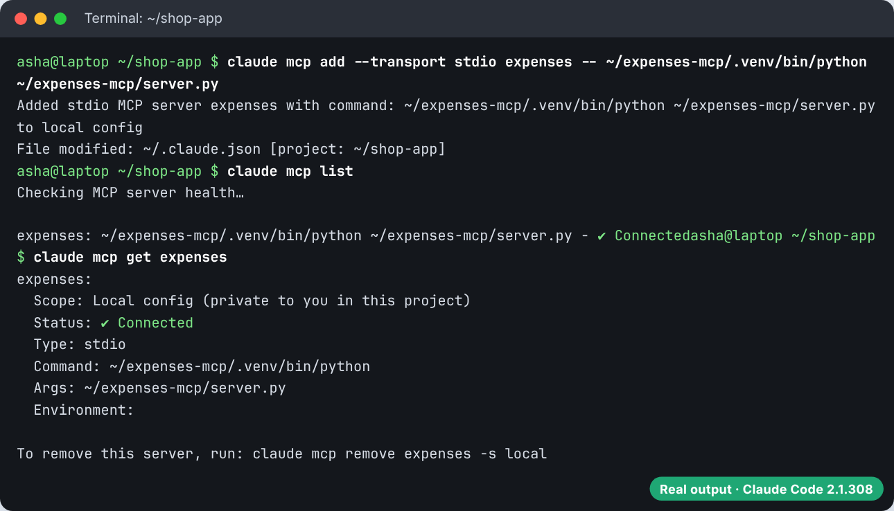
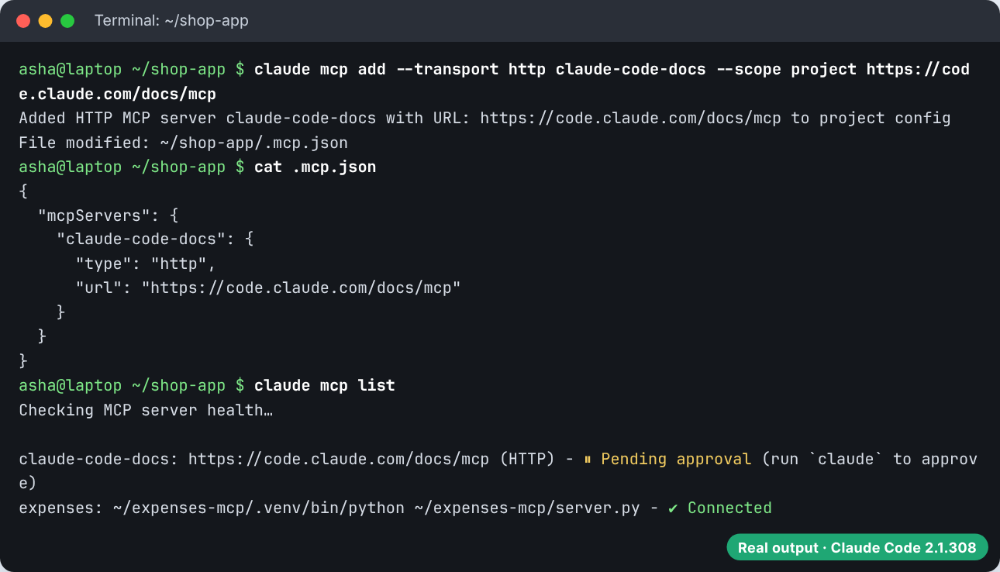
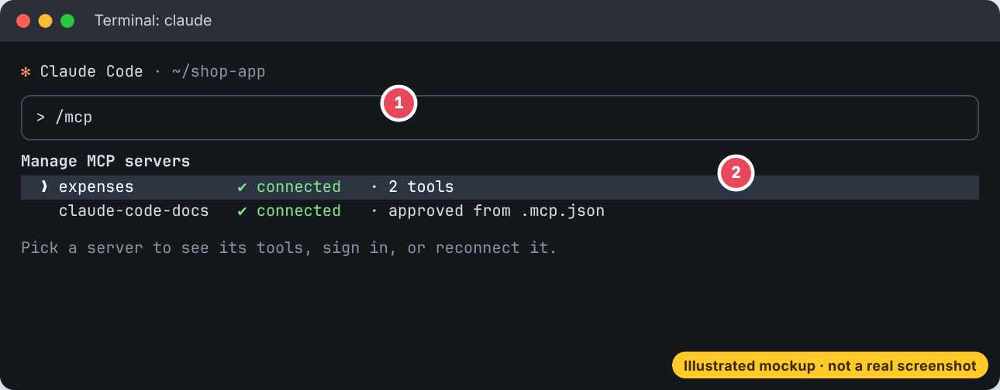
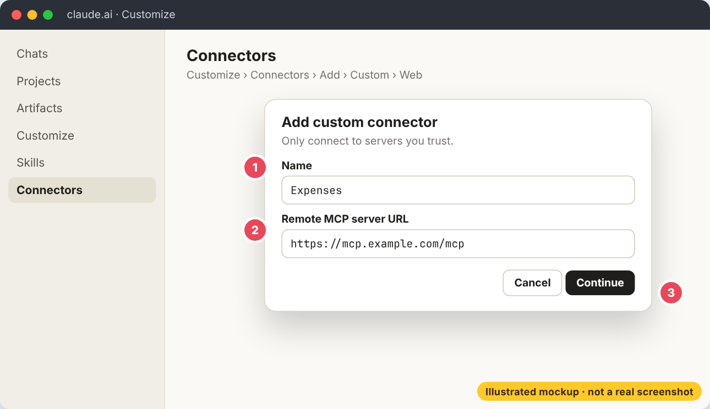
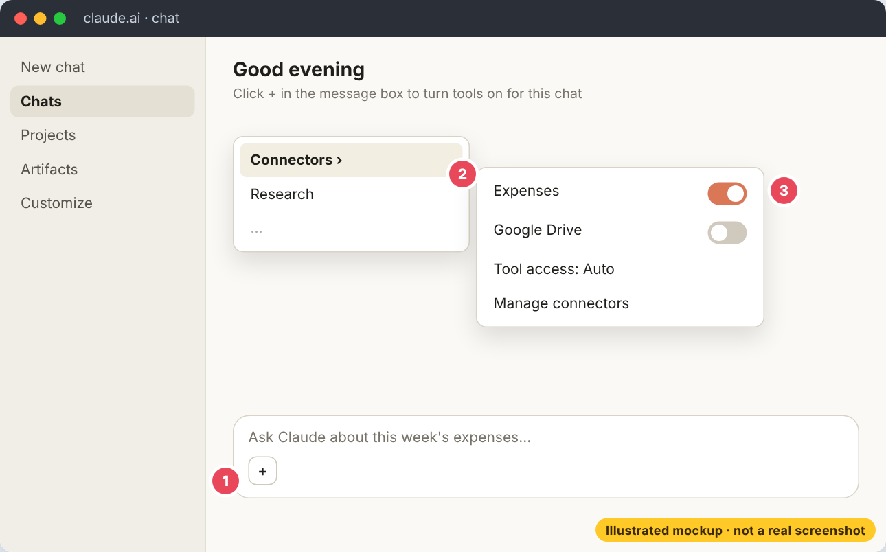
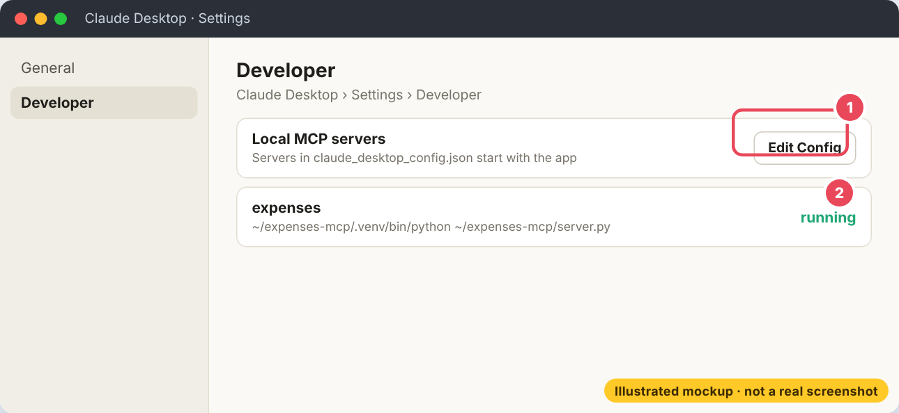

What MCP is, connecting your first server in three steps, scopes and exactly what goes in .mcp.json, building a real expenses server in Python step by step, the JSON that travels between them, using MCP in Claude Code and Claude Desktop, and adding connectors in claude.ai, with a screenshot for every setup step.
MCP lets Claude use other programs. You write a small program that says "I can add an expense", and when you ask Claude to add one, Claude asks your program to do it.
MCP (Model Context Protocol) is an open standard that lets Claude use tools and data from other programs: your issue tracker, a database, a calendar, or a script you wrote yourself. One program, the MCP server, offers the tools. Claude Code, Claude Desktop and claude.ai are MCP clients that connect to it.
| A server can offer | What it is | How you use it |
|---|---|---|
| Tools | actions Claude can run, like "add expense" | Claude calls them when they fit your request |
| Resources | read only data, like a file or a record | type @server:uri in your prompt |
| Prompts | ready made prompt templates | type /mcp__server__prompt |
claude mcp add in your terminal, outside a session.claude mcp list, or /mcp inside a session./mcp and pick it to sign in.# 1. Add the free Claude Code docs server (no login needed) claude mcp add --transport http claude-code-docs https://code.claude.com/docs/mcp # 2. Check it connected claude mcp list # 3. Use it claude > Use the claude-code-docs server to find how hooks block a command
claude mcp list shows the server with a connected tick. In the session Claude calls the server's search tool and answers from the official pages.
# A hosted (remote) server: use http claude mcp add --transport http notion https://mcp.notion.com/mcp # A remote server that needs a key in a header claude mcp add --transport http secure-api https://api.example.com/mcp \ --header "Authorization: Bearer your-token" # A local program (stdio). Everything after -- is the command that starts it claude mcp add --transport stdio --env AIRTABLE_API_KEY=YOUR_KEY airtable \ -- npx -y airtable-mcp-server # Manage claude mcp list # all servers claude mcp get notion # one server claude mcp remove notion # remove it /mcp # inside a session: status, sign in, tools
http is for hosted services and is the recommended remote transport. stdio starts a program on your computer. SSE still works but is deprecated.
-- matters. Everything after it is the command that starts the server, so flags like --port go to the server and not to Claude.Here is the expenses server from this chapter added to Claude Code for real, then a shared server added for the whole team. The terminal pictures are real output, with the home folder shown as ~.
Run claude --version. The claude mcp commands below work without starting a session.

Use --transport stdio for a program on your computer. Everything after -- is the command that starts it. Use full paths. claude mcp list starts each server and shows ✔ Connected when the handshake works. claude mcp get shows the scope and command.

--scope project writes the server into .mcp.json at the project root, so it can be committed. For safety, Claude Code shows it as Pending approval until each person approves it once.

Run claude, approve the project server when asked, then type /mcp to see every server, its tools and its status. Now ask "add Rs 450 for printer ink and tell me the total".

claude mcp list shows ✘ Failed, run the start command yourself in the terminal. The error you see there is the real reason, most often a wrong path or a missing package.| Scope | Loads in | Shared with team | Stored in |
|---|---|---|---|
| local (default) | this project only | no | ~/.claude.json, under this project |
| project | this project only | yes, through git | .mcp.json at the project root |
| user | all your projects | no | ~/.claude.json |
claude mcp add --transport http stripe https://mcp.stripe.com # local (default) claude mcp add --transport http shared --scope project https://example.com/mcp # writes .mcp.json claude mcp add --transport http hubspot --scope user https://mcp.hubspot.com/anthropic claude mcp reset-project-choices # forget your approvals of .mcp.json servers
{
"mcpServers": {
"claude-code-docs": {
"type": "http",
"url": "https://code.claude.com/docs/mcp"
},
"expenses": {
"type": "stdio",
"command": "python3",
"args": ["${CLAUDE_PROJECT_DIR:-.}/mcp/server.py"]
},
"company-api": {
"type": "http",
"url": "${API_BASE_URL:-https://api.example.com}/mcp",
"headers": { "Authorization": "Bearer ${API_KEY}" }
}
}
}mcpServers. Each has a type (http or stdio), then url and headers for http, or command, args and env for stdio. Never write a real key here. Use ${API_KEY} so each person's key comes from their own environment, and ${VAR:-default} for a fallback..mcp.json at the project root. Claude Code does not read ~/.claude/mcp.json or .claude/.mcp.json. An http entry without "type" is an error, because an entry with no type is read as stdio.When the same name is in several scopes, local wins, then project, then user. Claude Code asks once before it uses servers from a project's .mcp.json.
Here is a server that saves expenses. Claude will be able to say "Saved team lunch for ₹850" because it called your code.
mcp package.server.py: create an MCPServer, mark each tool with @mcp.tool(), then call mcp.run(). The type hints become the input schema and the docstring becomes the description.claude mcp add and ask Claude to use it.mkdir expenses-mcp && cd expenses-mcp python3 -m venv .venv && source .venv/bin/activate pip install "mcp>=2" # write server.py (below), test it with try_it.py (below), then: claude mcp add --transport stdio expenses -- "$PWD/.venv/bin/python" "$PWD/server.py"
# server.py: a small MCP server that saves expenses to a file. import json from pathlib import Path from typing import Annotated from pydantic import Field from mcp.server import MCPServer FILE = Path("expenses.json") mcp = MCPServer("expenses") def load(): return json.loads(FILE.read_text()) if FILE.exists() else [] # Tool 1: save one expense. The docstring tells Claude when to use it. @mcp.tool() def add_expense( item: Annotated[str, Field(description="What the money was spent on")], amount: Annotated[float, Field(gt=0, description="Amount in rupees")], ) -> str: """Save one expense with what it was for and the amount in rupees.""" expenses = load() expenses.append({"item": item, "amount": amount}) FILE.write_text(json.dumps(expenses, indent=2)) return f"Saved {item} for ₹{amount:g}. Expenses saved: {len(expenses)}." # Tool 2: add everything up. @mcp.tool() def total_spent() -> str: """Add up every saved expense and say the total in rupees.""" total = sum(e["amount"] for e in load()) return f"Total spent: ₹{total:g}" # A resource: read only data Claude can pull in with @expenses:expenses://all @mcp.resource("expenses://all") def all_expenses() -> str: """Every saved expense, one per line.""" return "\n".join(f"{e['item']}: ₹{e['amount']:g}" for e in load()) or "No expenses yet." if __name__ == "__main__": mcp.run() # stdio by default. Never print() here, stdout carries the messages.
# try_it.py: plays the part of Claude Code. It starts the server, lists its tools and calls them. import asyncio import sys from mcp import Client from mcp.client.stdio import StdioServerParameters async def main(): server = StdioServerParameters(command=sys.executable, args=["server.py"]) async with Client(server) as client: tools = await client.list_tools() print("Tools the server offers:") for t in tools.tools: print(" -", t.name + ":", t.description) async def call(name, args=None): r = await client.call_tool(name, args or {}) flag = "ERROR " if r.is_error else "" print(f"{name}({args or {}}) -> {flag}{r.content[0].text.splitlines()[0]}") await call("add_expense", {"item": "auto rickshaw", "amount": 120}) await call("add_expense", {"item": "team lunch", "amount": 850}) await call("total_spent") await call("add_expense", {"item": "refund", "amount": -50}) # the schema says more than 0, so this is refused week = await client.read_resource("expenses://all") print("resource expenses://all:") print(week.contents[0].text) asyncio.run(main())
$ python try_it.py
Tools the server offers:
- add_expense: Save one expense with what it was for and the amount in rupees.
- total_spent: Add up every saved expense and say the total in rupees.
add_expense({'item': 'auto rickshaw', 'amount': 120}) -> Saved auto rickshaw for ₹120. Expenses saved: 1.
add_expense({'item': 'team lunch', 'amount': 850}) -> Saved team lunch for ₹850. Expenses saved: 2.
total_spent({}) -> Total spent: ₹970
add_expense({'item': 'refund', 'amount': -50}) -> ERROR Error executing tool add_expense: 1 validation error for add_expenseArguments
resource expenses://all:
auto rickshaw: ₹120
team lunch: ₹850add_expense, a docstring that says when to use it, a description on every input, and a reply that tells Claude what happened. Never print() in a stdio server, because stdout carries the messages. Log to stderr instead.mcp package imports MCPServer from mcp.server. Older tutorials use FastMCP, which version 2 no longer has.Under the hood, MCP is a conversation of small JSON messages (JSON-RPC). For a stdio server they go one per line on stdin and stdout. First a handshake, then Claude asks for the tool list, then it calls a tool. You never write these yourself, the SDK does it, but seeing them once makes the idea clear.
CLAUDE CODE -> {"jsonrpc": "2.0", "id": 1, "method": "initialize", "params": {"protocolVersion": "2025-11-25", "capabilities": {}, "clientInfo": {"name": "demo", "version": "1"}}}
SERVER <- {"capabilities": {"prompts": {...}, "resources": {...}, "tools": {"listChanged": false}}, "protocolVersion": "2025-11-25", "serverInfo": {"name": "expenses"}}
CLAUDE CODE -> {"jsonrpc": "2.0", "method": "notifications/initialized"}
CLAUDE CODE -> {"jsonrpc": "2.0", "id": 2, "method": "tools/list", "params": {}}
SERVER <- {"tools": [{"name": "add_expense", "description": "Save one expense with what it was for and the amount in rupees.",
"inputSchema": {"type": "object", "required": ["item", "amount"], "properties": {
"item": {"type": "string", "description": "What the money was spent on"},
"amount": {"type": "number", "exclusiveMinimum": 0, "description": "Amount in rupees"}}}},
{"name": "total_spent", ...}]}
CLAUDE CODE -> {"jsonrpc": "2.0", "id": 3, "method": "tools/call", "params": {"name": "add_expense", "arguments": {"item": "chai", "amount": 20}}}
SERVER <- {"content": [{"type": "text", "text": "Saved chai for ₹20. Expenses saved: 1."}], "isError": false}Each tool's name, description and schema are what Claude reads to decide when to call it. That is why clear descriptions matter so much.
Add a ₹450 expense for printer ink, then tell me the total Compare @github:issue://123 with @docs:file://api/authentication /mcp__github__pr_review 456
Claude calls mcp__expenses__add_expense and mcp__expenses__total_spent. The @ mentions pull in two resources. The slash command runs a prompt the github server offers.
Every MCP tool gets a full name mcp__<server>__<tool>. Use that name in permission rules, in a skill's allowed-tools, in an agent's tools and in hook matchers.
{
"permissions": {
"allow": ["mcp__expenses__*", "mcp__claude-code-docs__*"],
"ask": ["mcp__github__create_pull_request"],
"deny": ["mcp__company-api__delete_customer"]
}
}MAX_MCP_OUTPUT_TOKENS.The Claude Desktop chat app reads its own file, claude_desktop_config.json. Open it from Settings, then Developer, then Edit Config. On macOS it is in ~/Library/Application Support/Claude/ and on Windows in %APPDATA%\Claude\. Use full paths, then restart the app.
{
"mcpServers": {
"expenses": {
"command": "/Users/asha/expenses-mcp/.venv/bin/python",
"args": ["/Users/asha/expenses-mcp/server.py"]
}
}
}claude mcp add-from-claude-desktop # copy Desktop servers into Claude Code (macOS, WSL) claude mcp serve # run Claude Code itself as an MCP server for other apps
In claude.ai an MCP server is called a connector. Popular services are in the Connectors Directory. Your own server can be added as a custom connector. The difference from Claude Code: claude.ai connects to your server from Anthropic's cloud, so the server must be a remote (http) server that the internet can reach. A stdio server on your laptop cannot be added this way. Use Claude Desktop or Claude Code for that.
Open Customize, then Connectors, click Add, hover Custom and pick Web. Give it a name, paste the remote MCP server URL, and click Continue. Then choose how people sign in and click Add.
🎨 Illustrated mockup, the real screen may look a little different
Click + in the message box, hover Connectors and switch on the ones this chat needs. Tool access is Auto by default. With ten or more connectors, On demand keeps the context small.
🎨 Illustrated mockup, the real screen may look a little different
For a server that runs on your own computer, open Claude Desktop, then Settings, Developer, Edit Config. Add the server to claude_desktop_config.json as shown above and restart the app.

| Fact | What it means for you |
|---|---|
| Claude gets your permissions | if you cannot open a file in the source app, Claude cannot either |
| Free plan: one custom connector | paid plans can add more |
| Team and Enterprise | an owner enables a connector first, then each person signs in with their own account |
| Owners set tool permissions | each tool can be Always allow, Needs approval or Blocked for the whole organisation |
📖 Every file name, folder, setting and command on this page was checked against the official Claude and Claude Code documentation in October 2026.